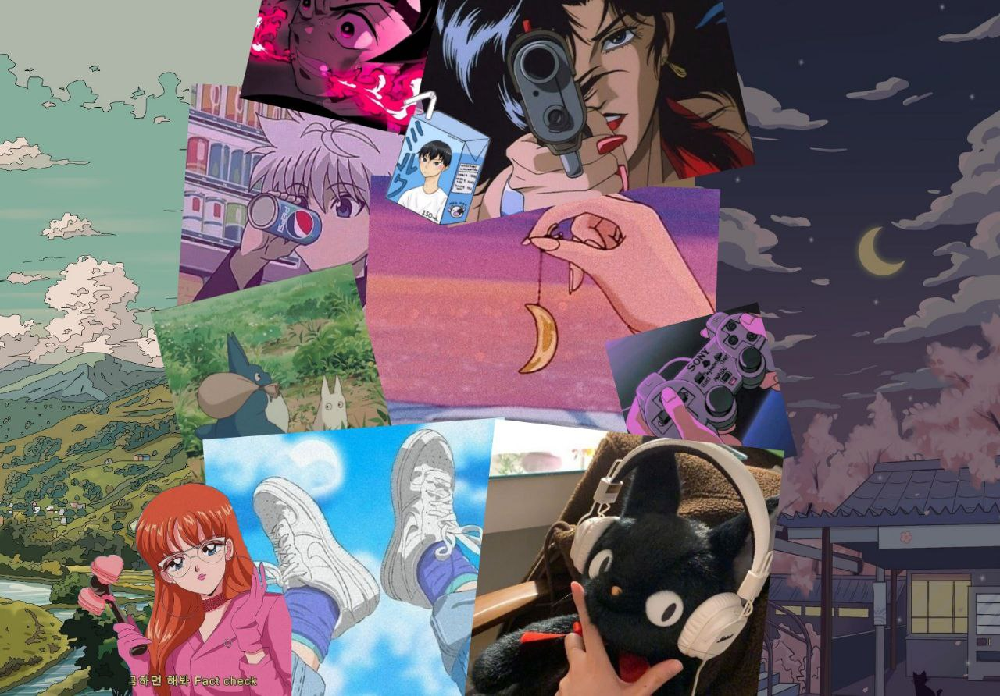

Одна из самых современных молодежных субкультур. Анимешники - фанаты японской анимации "аниме", манги (японских иллюстрационных рассказов) и прочих явлений японской культуры. Сама культура аниме начала зарождаться еще в начале 20 века, но распространение в современном виде получила в 80х, пережив много эволюционных скачков в жанрах и стилях. Истинные любители аниме - анимешники, или как они сами себя часто называют "отаку", интересуются собственно аниме, состоят в многочисленных компнаиях по интересам, устраивают сходки с косплеями (косплей - повторение образа того или иного персонажа аниме или попкультуры). Самыми культовыми и значимыми аниме стоит отметить Наруто, Тетрадь Смерти, Токиский Гуль, Нет игры - нет жизни, Торадора, на превью страницы аниме Эльфиская Песнь.
Гайд на аниме и отаку
Шикимори - аниме-энциклопедия